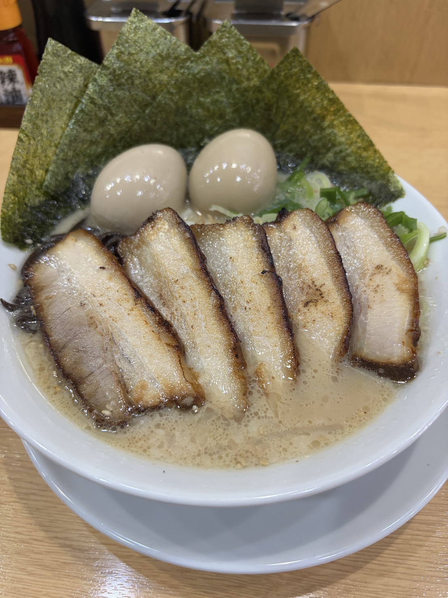
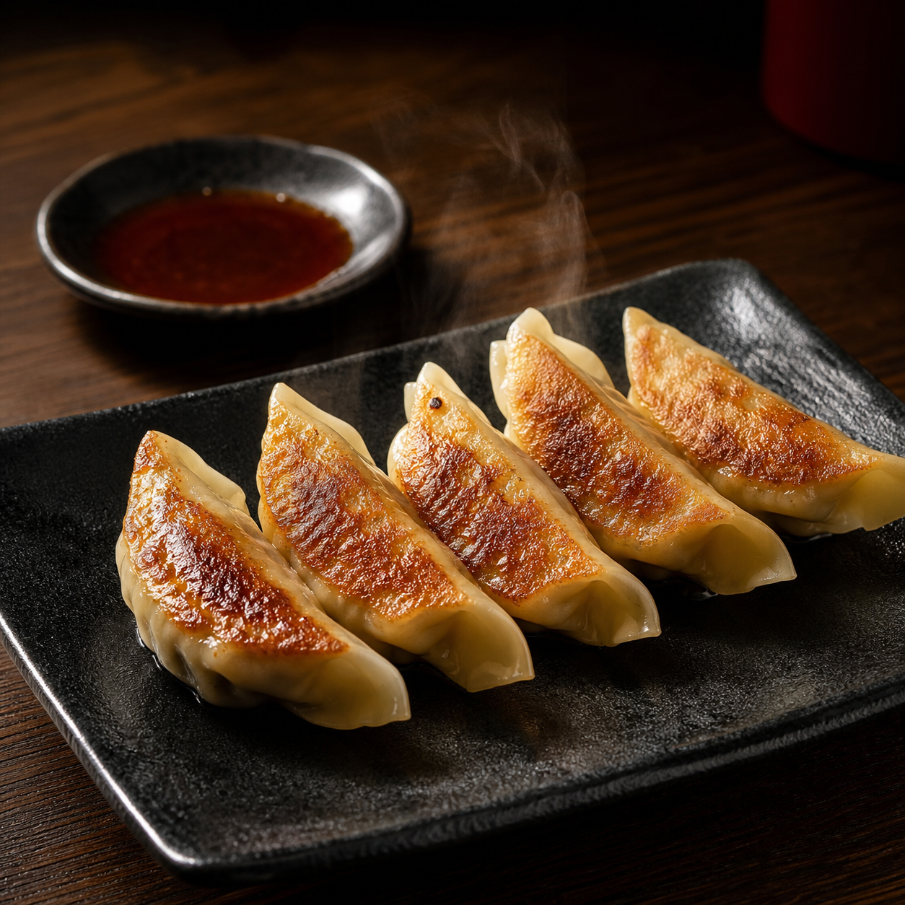
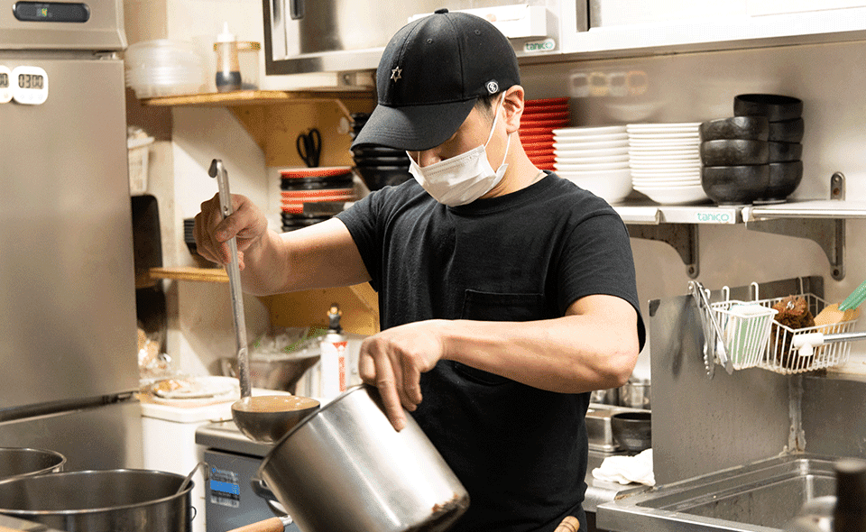
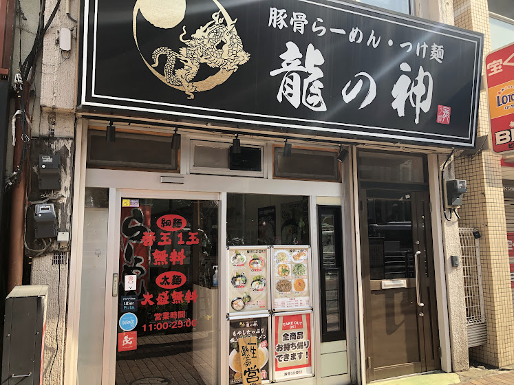
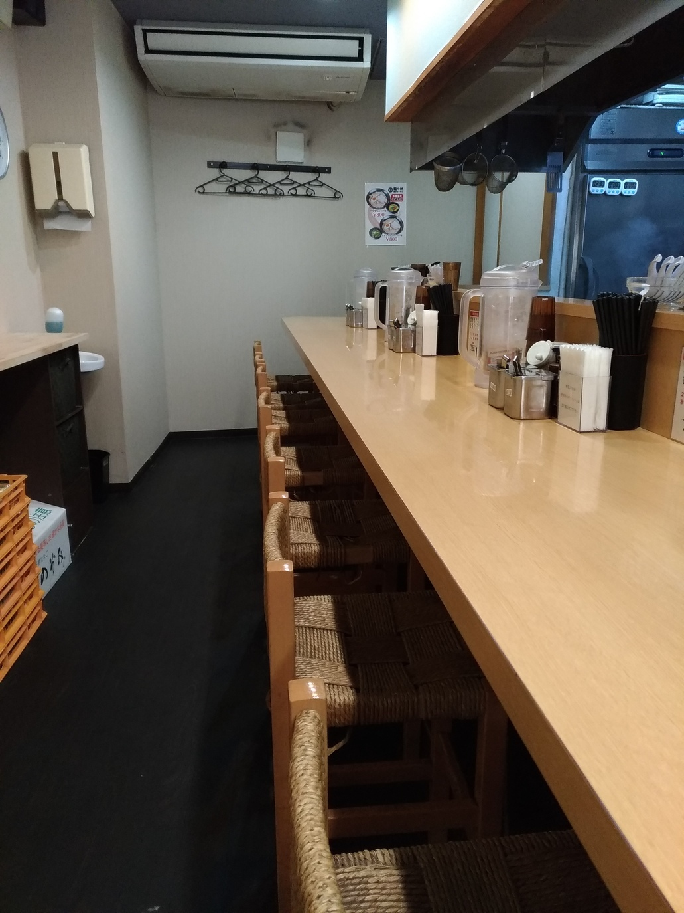

出汁の扱いを活かしたスープ
和食で培った出汁の引き方、香りの重ね方、火加減の感覚を活かし、最後まで飲み進めたくなるスープを目指しています。
About
龍の神は、大田区南雪谷、雪が谷大塚駅から徒歩1分の場所にある夫婦で営むラーメン店です。
店主は元板前。和食で培った出汁の扱い、素材を見る目、丁寧な仕込みを活かし、一杯ずつ心を込めて提供しています。
湯気の立つカウンターの活気と、夫婦で迎えるやわらかな空気。ご家族連れやお子さま連れ、お仕事帰りの方まで、気軽に立ち寄れる地域のお店です。
お子さま連れでも入りやすく、遅い時間の一杯にもご利用いただけます。
Shiro Ramen
まろやかな白濁スープに、自家製チャーシュー、海苔、特製トッピングの味玉を合わせ、さらに味玉を一つ追加した満足感のある一杯。具材までしっかり楽しめる、龍の神で人気の一品です。

Kodawari
和食で培った出汁の引き方、香りの重ね方、火加減の感覚を活かし、最後まで飲み進めたくなるスープを目指しています。
スープとの絡み、すすった時の香り、食べ終わりの満足感。日々の営業の中で、バランスのよい一杯へ整えていきます。
肉の旨みを大切に、ラーメン全体の味を支える具材として仕込みます。派手さより、また食べたくなる余韻を大切にしています。
Kitchen



Menu

自家製チャーシュー、味玉、海苔を合わせた掲載中の一杯。

今後の掲載にも対応できる、龍の神らしいラインアップ。

香ばしさとコクを感じる、黒の一杯。

ラーメンと一緒に選びやすいご飯もの。

自家製チャーシューの魅力を楽しめる一品。



Owner
和食の現場で磨いた技術をもとに、スープ・具材・盛り付けまで丁寧に仕上げています。
厨房では店主が一杯ずつ向き合い、店内では夫婦で声をかけ合いながらお客さまを迎えます。小さなお子さま連れでも入りやすいよう、肩ひじ張らない空気を大切にしています。
「特別な日だけでなく、仕事帰りや家族の食事でふと思い出してもらえる店でありたいです。元板前としての手仕事を大切にしながら、南雪谷の暮らしに馴染む一杯を作っていきます。」
店主
Story
龍の神は、元板前の店主が和食で培った感覚をラーメンに活かし、夫婦で守っていく地域のお店として歩み始めました。
駅から近く、ひとりでも家族でも立ち寄りやすい場所で、派手さよりも毎日食べられる丁寧さを大切にしています。
和食の現場で出汁、素材、火入れを学ぶ。
南雪谷で、夫婦で営むラーメン店として営業。
地域の方に長く親しまれる一杯を育てていく。
雪が谷大塚駅から116m
ひとりでも家族でも入りやすく
火曜から日曜まで
Shop
News